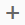

Use rank nodes in calculation views to partition the data for a set of partition
columns, and perform an ORDER BY SQL operation on the partitioned
data.
Context
For example, consider a TRANSACTION table with two columns
PRODUCT and SALES. If you want to retrieve the
top five products based on sales, use a rank node. The rank node first partitions
the TRANSACTION table with the PRODUCT as the
partition column, and performs an order by operation on the partitioned table using
the SALES column to retrieve the top five products based on
sales.
Procedure
-
Open the required calculation view in the view editor.
-
From the editor’s tools palette, drag the rank node to the editor.
-
Add data source.
-
Select the rank node.
-
Choose
 .
.
-
In the Find Data Sources dialog, enter the name of the data source
and select it from the list.
-
Choose OK.
-
Define output columns.
-
On the Mapping tab, select the columns you want to add to the
output of the rank node.
-
In the context menu, choose Add To Output.
Note
If you want to add all columns from the data source to the
output, in the context menu of the data source, choose
Add To Output.
-
Select the Definition tab.
-
Define sort direction.
-
In the Sort Direction dropdown list, select a
sort direction.
|
Sort Direction
|
Description
|
|
Descending (Top N)
|
Retrieves top N values from the ordered set
where N is the threshold value that you define.
|
|
Ascending (Bottom N)
|
Retrieves bottom N values from the ordered set
where N is the threshold value that you define
|
-
Define a threshold value.
Use a Fixed value or an Input Parameter as the
threshold value. It helps the tool identify the number of records from the
ordered set.
-
In the Threshold Value dropdown list, select a
threshold value type and provide the threshold value accordingly.
-
In the Order By dropdown list, select a column that
modeler must use to perform the order by operation.
-
Partition the data.
-
In the Partition By section, choose .
-
In the Partition By Column dropdown list, select a partition
column that the tool must use to partition the data.
Note You can partition the data using more than one partition column.
-
If you want to partition the data using only the partition by columns that query requests
for processing rank nodes, select the Dynamic Partition
Elements checkbox.
Note If you do not select this checkbox, the tool partitions the data with all partition
columns that you have added in the Partition By
section, even if these columns are not requested in the query.
-
Generate a rank column.
If you want generate an additional output column for the rank node to store the rank
values, select the Generate Rank Column checkbox.